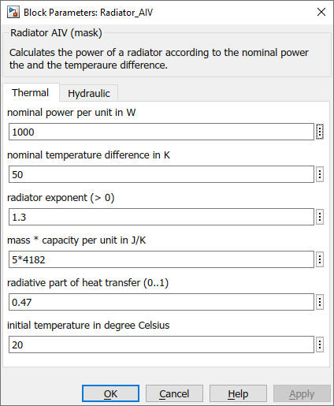

Radiator_AIV
Path:
CARNOT/Source/Heat_Exchanger
Purpose:
This block models the radiators of a house heating system.
Description:
The model adapts the Radiator model to the
AIB and S-Buses
for the detailed room model, see
Room_Radiator and
Room_Floor_Heating.
Input:
| AIB | : | Air infiltration bus |
| THB_in | : | Thermo-Hydraulic Bus of the flow line |
Output:
| S | : | S-bus |
| THB_out | : | Thermo-Hydraulic Bus of the return line |
Parameters and Dialog Box:

Examples:
Open the example explorer from the Matlab command window
ExampleBrowser
or load the examples via the CARNOT library.
Literature:
EN 442 Radiators and convectors, 2014
Characteristics:
| Direct Feedthrough | : | Yes |
| Sample Time | : | Inherited from driving block |
| Vectorized | : | No |